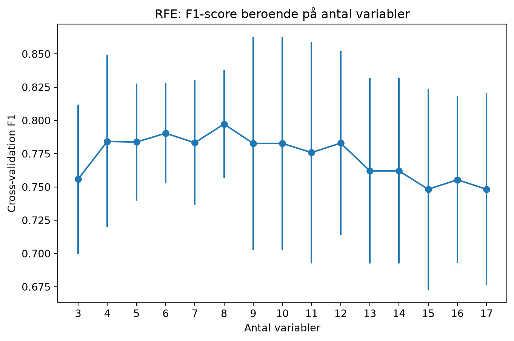

| model | Accuracy | Precision | Recall | F1 | |
|---|---|---|---|---|---|
| 0 | Logistic Regression | 0.944444 | 0.947368 | 0.947368 | 0.947368 |
| 1 | Random Forest | 0.861111 | 0.850000 | 0.894737 | 0.871795 |
| 2 | KNN | 0.750000 | 0.750000 | 0.789474 | 0.769231 |
| 3 | Gradient Boosting | 0.833333 | 0.842105 | 0.842105 | 0.842105 |
| 4 | Stacking | 0.916667 | 0.900000 | 0.947368 | 0.923077 |
Prediktiv analys
Frågeställning
Hur bra kan en maskininlärningsmodell förutse vilka länder som är demokratier utifrån tillgängliga data över samhällsindikatorer?
Databearbetning
Analyserna är gjorda för 2021, då detta år var det år där flest länder hade tillgängliga data för de variabler som analyserades (totalt 343 länder).
Först så …
Hantering av NaN
Bortfallshantering (exkludering av variabler/länder + imputering)
Standardisering av data
Prediktion med maskininlärningsmodeller
Metod
80/20 träningsdata/testdata
Förklara hur och varför indelningen av X_train, y_train m.m. sker och hur jämförelser sedan görs utifrån respektive modell.
KFold & GridSearchCV (särskilt bra med mindre datapunkter för att köra flera iterationer?)
Logistisk regression
Vad? Varför? Hur?
Gradient Boosting Tree
Vad? Varför? Hur?
K-Nearest-Neighbors
Vad? Varför? Hur?
Random Forest
Vad? Varför? Hur?
Stacking Classifier
Vad? Varför? Hur?
Sammanfattning av resultaten
| feature | coefficient | abs_coef | |
|---|---|---|---|
| 0 | korruption_index | -1.211614 | 1.211614 |
| 1 | energi_percapita | -0.523747 | 0.523747 |
| 2 | statligautgifter_andel_bnp | 0.469879 | 0.469879 |
| 3 | handel_andel_gdp | -0.299364 | 0.299364 |
| 4 | barn_per_kvinna | -0.249664 | 0.249664 |
| 5 | livstillfredsställelse | 0.243288 | 0.243288 |
| 6 | skatt_andel_bnp | 0.158603 | 0.158603 |
| 7 | co2_percapita | -0.003788 | 0.003788 |
| 8 | livslängd | 0.000000 | 0.000000 |
| 9 | skolår | 0.000000 | 0.000000 |
| 10 | andel_kvinnor_arbete | 0.000000 | 0.000000 |
| 11 | utbildning_andel_gdp | 0.000000 | 0.000000 |
| 12 | suicid/100k | 0.000000 | 0.000000 |
| 13 | fetma_andel | 0.000000 | 0.000000 |
| 14 | gdp_per_capita | 0.000000 | 0.000000 |
| 15 | mord_percapita | 0.000000 | 0.000000 |
| 16 | död_i_konflikt_percapita | 0.000000 | 0.000000 |
Vidareutveckling av den optimala modellen
Nästa steg var att försöka optimera den bästa modellen (logreg) för att hitta den modell med så få variabler som möjligt, för att försöka hitta de variabler som är viktigast för att ge samma prediktionsförmåga som modellen som helhet.
RFE-analys

"['co2_percapita', 'energi_percapita', 'skatt_andel_bnp', 'statligautgifter_andel_bnp', 'handel_andel_gdp', 'livstillfredsställelse', 'barn_per_kvinna', 'korruption_index']"Reducerad modell
En modell med dessa åtta variabler hade den bästa prediktionsförmågan av vilka länder som var demokratier 2021. De är rangordnade utifrån…
| feature | coefficient | abs_coef | |
|---|---|---|---|
| 0 | korruption_index | -1.385110 | 1.385110 |
| 1 | statligautgifter_andel_bnp | 0.694908 | 0.694908 |
| 2 | energi_percapita | -0.565511 | 0.565511 |
| 3 | handel_andel_gdp | -0.521053 | 0.521053 |
| 4 | livstillfredsställelse | 0.510181 | 0.510181 |
| 5 | barn_per_kvinna | -0.389491 | 0.389491 |
| 6 | co2_percapita | -0.382465 | 0.382465 |
| 7 | skatt_andel_bnp | 0.221615 | 0.221615 |